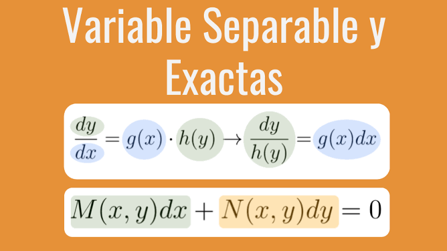
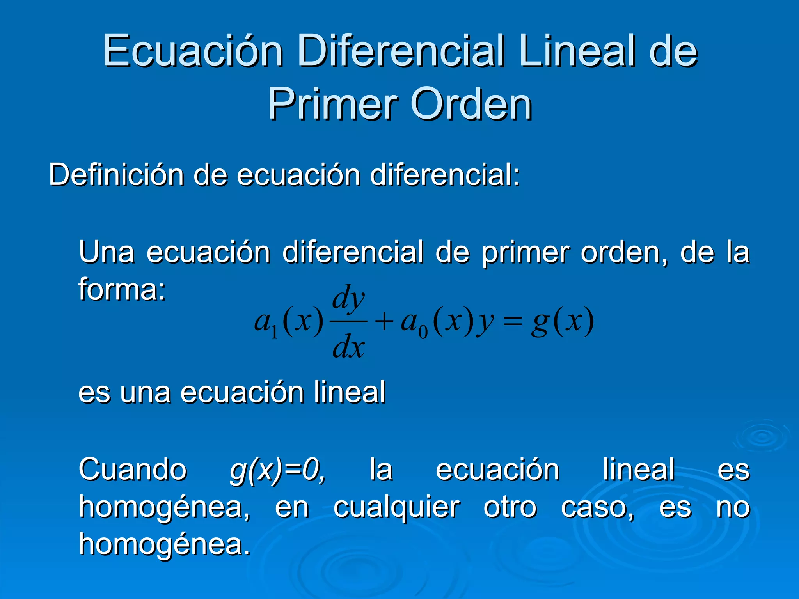

Ecuaciones Diferenciales de Primer Orden

| Caracteristica | Descripcion | Forma General |
|---|---|---|
| Definicion | La ecuacion puede separarse en funciones de x y funciones de y | dy/dx = g(x)h(y) |
| Metodo de solucion | Separar variables e integrar ambos lados | ∫ dy/h(y) = ∫ g(x)dx |
| Condicion | h(y) ≠ 0 para evitar division por cero | Soluciones singulares posibles |
| Aplicaciones | Modelos de crecimiento, decaimiento radiactivo, leyes de enfriamiento | dP/dt = kP, dT/dt = -k(T-Ta) |
Pasos para resolver:
• Identificar si la ecuacion es separable
• Agrupar terminos con y y dy en un lado, x y dx en el otro
• Integrar ambos lados
• Despejar y si es posible
• Verificar la solucion sustituyendo en la ecuacion original

| Caracteristica | Descripcion | Ejemplo |
|---|---|---|
| Definicion | M(x,y)dx + N(x,y)dy = 0 donde M y N son homogeneas del mismo grado | (x² + y²)dx - xydy = 0 |
| Sustitucion | v = y/x, por lo tanto y = vx y dy = vdx + xdv | dy/dx = v + x(dv/dx) |
| Transformacion | Se convierte en ecuacion separable en v y x | ∫ dv/(f(v)-v) = ∫ dx/x |
| Verificacion | Comprobar que f(tx,ty) = f(x,y) para t ≠ 0 | f(x,y) = (x²+y²)/(xy) |

Estrategia de resolucion:
• Verificar que M y N sean homogeneas del mismo grado
• Aplicar la sustitucion v = y/x
• Separar variables en terminos de v y x
• Integrar y sustituir de regreso v = y/x
• Obtener la solucion general

| Concepto | Descripcion | Condicion |
|---|---|---|
| Exactitud | La diferencial es exacta si proviene de una funcion potencial | ∂M/∂y = ∂N/∂x |
| Funcion potencial | ψ(x,y) tal que ∂ψ/∂x = M y ∂ψ/∂y = N | ψ(x,y) = C |
| Metodo de solucion | Integrar M respecto a x, derivar respecto a y e igualar a N | Integracion parcial |
| Factor integrante | Si no es exacta, buscar μ(x) o μ(y) para hacerla exacta | μ depende solo de x o solo de y |
Procedimiento de resolucion:
• Verificar la condicion de exactitud ∂M/∂y = ∂N/∂x
• Si no es exacta, determinar el factor integrante
• Encontrar ψ(x,y) integrando M respecto a x
• Derivar ψ respecto a y e igualar a N para encontrar la funcion de integracion
• Escribir la solucion implicita ψ(x,y) = C

| Elemento | Descripcion | Formula |
|---|---|---|
| Forma estandar | Ecuacion lineal de primer orden | dy/dx + P(x)y = Q(x) |
| Factor integrante | Funcion que permite resolver la ecuacion | μ(x) = e^(∫P(x)dx) |
| Solucion general | Multiplicar por μ(x) e integrar | y = (1/μ)[∫μ·Q(x)dx + C] |
| Ecuacion de Bernoulli | Case no lineal reducible a lineal | dy/dx + P(x)y = Q(x)yⁿ |
Metodo de resolucion:
• Escribir la ecuacion en forma estandar dy/dx + P(x)y = Q(x)
• Calcular el factor integrante μ(x) = e^(∫P(x)dx)
• Multiplicar toda la ecuacion por μ(x)
• El lado izquierdo se convierte en d/dx[μ(x)·y]
• Integrar ambos lados respecto a x
• Despejar y para obtener la solucion general